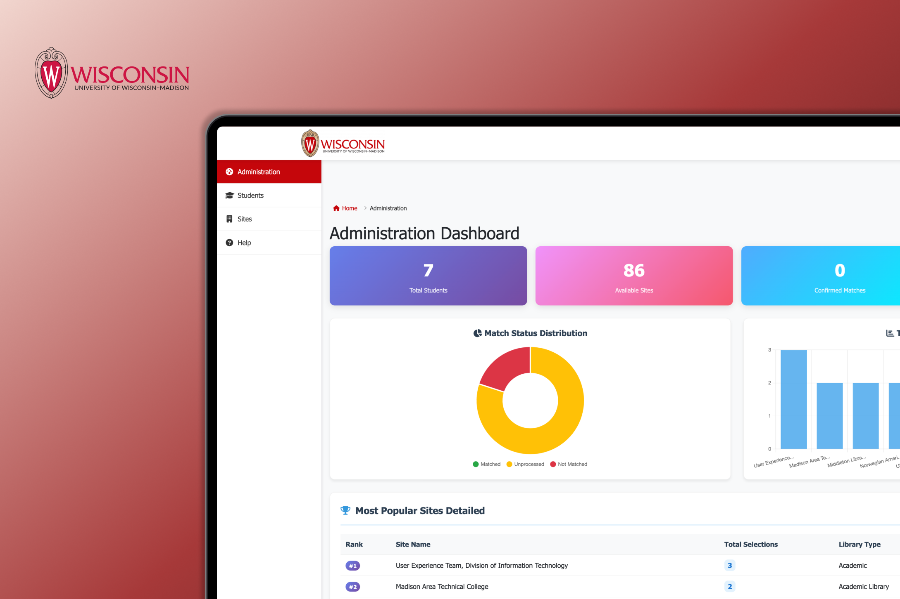

What is MAPWA?
MAPWA is the practicum matching web app used by the MA-LIS program at the University of Wisconsin-Madison. Every semester, over 200 graduate students use it to apply for and get matched to library and information science placements.

Case Study · UX Design and Research
Students were confused, administrators were buried in emails. I redesigned the student user flow and built an admin dashboard that turned a reactive, manual process into something legible and manageable.
MAPWA is the practicum matching web app used by the MA-LIS program at the University of Wisconsin-Madison. Every semester, over 200 graduate students use it to apply for and get matched to library and information science placements.
I led research synthesis, student workflow analysis, interaction design, prototyping, and the admin dashboard experience with a developer and team lead.
Context
A matching system that worked on paper but left everyone guessing.
The system technically functioned, but the experience was opaque enough to generate constant confusion — students who did not know where they stood, and administrators spending hours each week dealing with the fallout.
The original MAPWA — functional entry points, but no guidance on what happened after each step
Problem
43 emails that told the whole story.
After the first round of matching, the admin inbox received 43 emails from students. I read and categorized every single one. The pattern was immediate and unambiguous.
Student emails received after the first matching round — more than half asking the same two questions
20+ emails
Students did not know whether their application had been submitted, whether they had been matched, or what was supposed to happen next. The system completed their action but gave them nothing to hold onto afterward.
Remaining emails
Questions about finding placements outside the system, contacting sites before confirmation, and requests to switch after a match had already been made.
Real quotes from student emails mapped onto the interface — the gaps in the flow made visible
On the admin side, there was no dashboard and no way to see match status at a glance. Every incoming question required someone to dig through spreadsheets to find an answer — consuming three to four hours every week.
Research
Reading the old flow to find exactly where it broke down.
I interviewed admin staff to understand how they spent their time and what information they needed most often. Then I mapped the existing student workflow in full — not to document it, but to find every point where a student could complete an action and still have no idea what came next.
The old student workflow — complete in steps, but silent at every transition point
The flow itself was not wrong. Students were following the steps correctly. The problem was that nothing acknowledged when they had completed a step or told them what was coming next. Every transition was a black box. The brief became: do not rebuild the flow from scratch; close the gaps within it.
Design Approach
The redesign split into two parallel tracks. Before opening a frame, I established the design system that would carry both — grounded in the university's existing brand with UW red as the primary color and a clean typographic scale that worked across dense data views and simple confirmation states alike.
Design system foundation — UW red as primary, consistent type scale across student and admin surfaces
Full design overview in Figma — Homepage, Login, Student flow steps, Admin Dashboard, and data views
Two parallel workstreams
Communication for students. Visibility for admins.
Student flow
Automated emails were added at the end of every major step. Students received confirmation summaries, match instructions, and a full walkthrough video before beginning the process.
Admin dashboard
A dashboard surfaced matched, pending, and unmatched students at once. Site popularity rankings and one-click export replaced the manual spreadsheet process.
Admin tools
The shape of a cohort, visible at a glance.
Admin dashboard — match status distribution, site popularity ranking, and one-click export in one view
Student data table — interest submitted, contact release, and match status visible per row with export access
Solution
Redesigned homepage — same entry structure, clearer system state
Admin dashboard — all match statuses visible without opening a single spreadsheet
Automated emails at each step transition — the core intervention that closed the information gaps
Results
Reflection
The most valuable thing I did on this project was not design a single screen. It was sitting down with 43 emails and reading every one of them. That exercise turned a vague sense that something was wrong into a precise map of where and why. It gave the whole team a shared language for the problem — instead of talking about student confusion as a general feeling, we could point to specific moments in the flow where the system went silent.
That is what I keep coming back to: finding the gap is harder than filling it. Once you know exactly where the flow breaks down, the design decisions almost make themselves. The automated emails, walkthrough video, and dashboard were not complicated ideas. What made them effective was that they were aimed at real, documented problems rather than assumptions. The gap analysis was the design work. Everything else was execution.
Back to all work